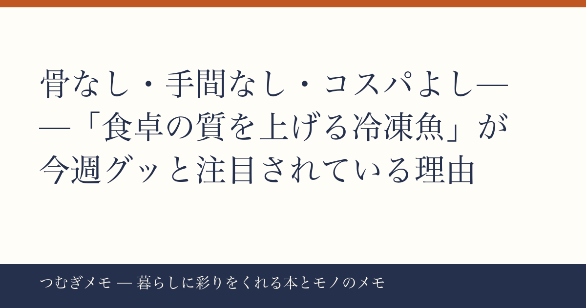

こんにちは、つむぎです。8月最後の週、まだまだ暑い日が続くなかで「でも夕飯はちゃんと食べたい」という気持ち、よくわかります。
この記事でわかること： 骨取りサバをはじめとする「高コスパ冷凍魚」が今週楽天で急上昇している理由と、それを使って食卓の満足度を底上げする具体的な活用法。
今週の要点
- 骨取りサバ1kg・レビュー18,889件★4.51が楽天10位にランクイン、"品質の安心感"が支持の中心
- 炭酸水48本セット（楽天3位・★4.68）も同時にトップ圏——「食まわりの備蓄まとめ買い」という行動が重なっている
- 夏終盤の"常備食見直し需要"が、今週の食品カテゴリを横断して浮上している
---
楽天で今週10位にランクインした骨取りサバ切身1kg（2,490円・送料無料・★4.51）は、レビュー数が18,889件という圧巻の数字を持つ。これはランキング圏内の食品商品の中でも飛び抜けており、「瞬間的なセール効果」ではなく積み上げてきた信頼の厚さを示している。
なぜこれが今の暮らしに刺さるのか。ひと言で言えば「魚を食べる障壁を限りなくゼロにしてくれるから」だと思う。サバは栄養的に優れているという認識は多くの人が持っているのに、「骨が面倒」「生臭さが気になる」「切り方がわからない」という現実が家庭での魚離れを生んでいる。骨なし・冷凍・1kg単位という仕様は、その三つの壁をまとめて崩す。
さらに「無塩または有塩が選べる」という点も見逃せない。塩分が気になる世代にとって、下処理の自由度は地味に大きい選択肢だ。フライパンで焼くだけでなく、無塩ならばムニエルやホイル蒸し、みそ煮にも転用できる。
今日できること： 冷凍庫の中身を一度確認して、「週3回分の魚枠」を空けておく。買い置きした骨取りサバを1切れずつ取り出して使うだけで、外食や惣菜に頼っていた夜の定食が家で完結するようになる。1kgあれば一般的な切身換算で8〜10食分。月に1袋のペースで回せば、魚食の習慣がかなり現実的になる。
---
骨取りサバだけではない。同じ週に炭酸水500ml×48本セット（楽天3位・★4.68、レビュー17,263件）、無洗米10kg（楽天1〜2位帯・レビュー6,684件・★4.69）がそれぞれランキング上位を占めた。共通しているのは「重くてかさばる日常消耗品を、ネットでまとめて手配する」という行動パターンだ。
夏の終わりというタイミングが重要だと思う。9月に入ると子どもの学校が始まり、秋の行事シーズンが重なって「買い物に行く時間」が一気に減る。その前に食まわりの備蓄を整えておこうという動きが、今週のランキングに凝縮されている。これは「節約志向」というより「時間の先買い」という感覚に近い。
炭酸水に関して言えば、強炭酸・無糖という仕様がほぼ固定化されているのも今の傾向を映している。夏の水分補給だけでなく、お酒を飲む量を減らしたい人のノンアルコール代替、食事中の満足感アップなど、用途が広がっている。週に1〜2ケース消費する家庭では箱買いがコスト的にも合理的になる。
今日できること： 今週末の買い物リストに「重い・かさばる・毎週買っているもの」を書き出してみる。炭酸水・米・調味料・洗剤……それらをまとめてネット注文に移すだけで、週の買い物時間が体感で変わる。サバも炭酸水も、「都度買い」を「まとめ買い」に切り替えたときのコスト差は、月単位で計算すると思った以上に大きい。
---
ここで少し広く考えてみたい。「骨取りサバが売れている」という話は、単なる食品トレンドではなく、「ちょっとだけ手間を減らすことで、続けられる食習慣をつくる」という暮らし方の変化を示している。
完璧な自炊をめざすより、「続けられる80点の食事」を日常にする発想は、ここ数年でずいぶん市民権を得てきた。冷凍食品の品質向上がその追い風になっていることは間違いない。レビュー数万件の商品が当たり前に存在する時代は、「試してみる前のリスク」がかなり低くなっているとも言える。
レシピ本でも、冷凍ストックを前提にした時短・使い回し系の本が根強い人気を持ち続けている。たとえばAmazonで『冷凍コンテナごはん 予約のとれない料理教室リケジョ先生の』を見るのような、週末に仕込んで平日を楽にするアプローチは、骨取りサバの活用とも相性がいい。
食卓に「魚の日」を設けることは、「お金をかけずに食の質を上げる」という意味でも、暮らしにちょうどいい彩りを加えてくれる。特別な料理スキルは要らない。骨がない、冷凍してある、という2点だけで、魚は一気に「ハードルの低い食材」に変わる。
今日できること： 週のどこか1日を「魚の日」と決めてみる。曜日を固定するだけで、献立を考える負荷が下がり、自然とサバ缶・骨取り冷凍魚・缶詰などをローテーションする習慣が生まれる。
---
Q. 骨取りサバは塩分が多そうですが、無塩と有塩どちらがおすすめ？
A. 使い方次第です。味付きのまま食べるなら有塩が手軽。みそ煮・ホイル焼き・アレンジ料理に使うなら無塩が向いています。今回ランクインした商品は注文時に選べる仕様なので、初めての場合は無塩から試してみると使い回しの幅が広がります。
Q. 冷凍魚と缶詰サバ、どちらが使いやすいですか？
A. 目的によります。缶詰は常温保存・開けてすぐ食べられる手軽さが強み。冷凍の骨取り切身は「焼く・蒸す・煮る」という調理の幅が広く、一切れずつ取り出して使えるのが特徴です。両方をストックしておくと、疲れた日は缶詰、少し料理できる日は冷凍、と使い分けられて便利です。
Q. まとめ買いをしても冷凍庫に入らない場合は？
A. 冷凍庫の「食品カテゴリをゾーン分けする」方法が効果的です。魚・肉・野菜・ご飯類のエリアを袋や仕切りで分けるだけで、同じ冷凍庫でも収納量が体感で変わります。整理収納の基本として、よく使うものを手前・上段に置くことも重要です。
---
今週の骨取りサバのランクインは、「ちょっとした手間を省くことで食卓が豊かになる」という、このブログのテーマそのものを体現している話だなと思いました。特別なことをしなくても、ストックの選択肢を一つ変えるだけで、平日の夜がすこし変わる。そういう「小さな積み重ね」を一緒に探していけたらうれしいです。
また来週もお会いしましょう。
---
*つむぎメモは、AIの力を借りながら一人で運営している実験的なブログです。記事の構成や素材整理にAIをフル活用しつつ、方向性と言葉の最終判断は僕自身がやっています。そのプロセス自体もいつかまとめて書けたらと思っています。*
📚 目次へ